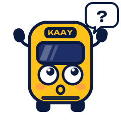

Aucune ligne 230
Vérifiez le numéro écrit à l'avant du bus. Vous cherchiez peut-être :
Pas sûr du numéro ? Voyez les bus qui passent près de vous.
Arrêts proches

Vérifiez le numéro écrit à l'avant du bus. Vous cherchiez peut-être :